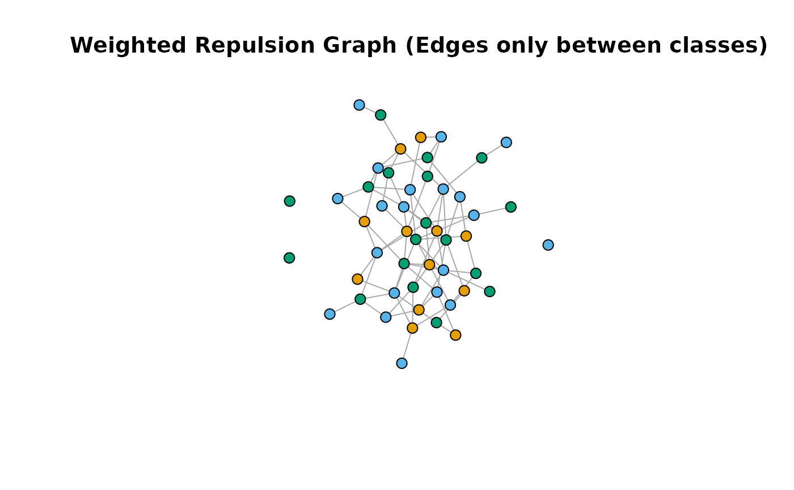
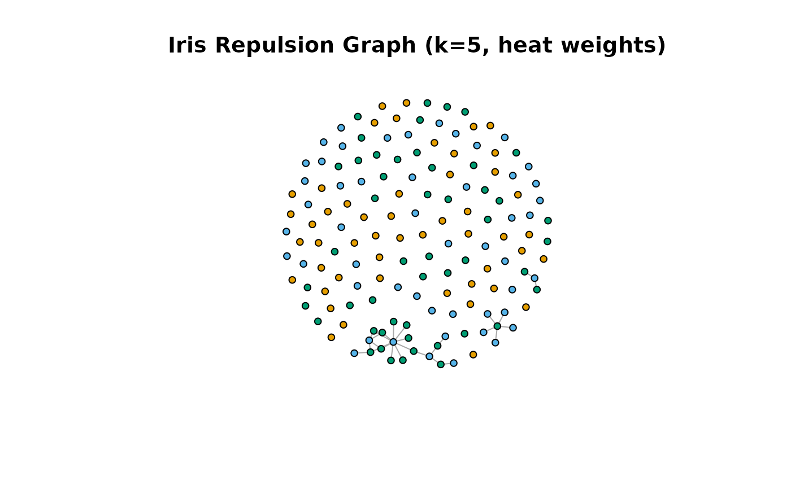

Constructs a "repulsion graph" derived from an input graph `W` and a class structure graph `cg`. The resulting graph retains only the edges from `W` that connect nodes belonging to *different* classes according to `cg`. Edges connecting nodes within the same class are removed (or "repulsed").
Usage
repulsion_graph(
W,
cg,
method = c("weighted", "binary"),
threshold = 0,
norm_fac = 1
)Arguments
- W
An input graph object. Can be a `Matrix` object (e.g., `dgCMatrix`) representing the adjacency matrix, or a `neighbor_graph` object. Edge weights are used if `method="weighted"`.
- cg
A `class_graph` object defining the class membership of the nodes in `W`. Must have the same dimensions as `W`.
- method
`character`. Specifies how to handle the weights of the remaining (between-class) edges: - `"weighted"` (default): Retains the original weights from `W`. - `"binary"`: Sets the weight of all remaining edges to 1.
- threshold
`numeric`. A threshold applied to the input graph `W` *before* filtering by class. Edges in `W` with weights strictly below this value are discarded. Default is 0.
- norm_fac
`numeric`. A normalization factor applied *only* if `method = "weighted"`. The weights of the retained edges are divided by this factor. Default is 1 (no normalization).
Value
A `repulsion_graph` object (inheriting from `neighbor_graph`), representing the filtered graph containing only between-class edges.
Details
This function takes an existing graph `W` (representing similarities, connections, etc.) and filters it based on class labels. The `class_graph` object `cg` provides a binary adjacency matrix where `1` indicates nodes belong to the *same* class. By taking the complement (`!adjacency(cg)`), we get a mask where `1` indicates nodes belong to *different* classes. Element-wise multiplication (`W * !adjacency(cg)`) effectively removes within-class edges from `W`.
The `method` argument controls whether the remaining edge weights are kept as is (`"weighted"`) or converted to binary indicators (`"binary"`).
This type of graph is useful when focusing on interactions *between* distinct groups or classes within a larger network or dataset.
Examples
library(Matrix)
set.seed(123)
N <- 50
X <- matrix(rnorm(N * 5), N, 5)
W_adj <- Matrix(rsparsematrix(N, N, 0.1, symmetric = TRUE)) # Base adjacency
diag(W_adj) <- 0
W_ng <- neighbor_graph(W_adj) # Convert to neighbor_graph
labels <- factor(sample(1:3, N, replace = TRUE))
cg <- class_graph(labels)
R_weighted <- repulsion_graph(W_ng, cg, method = "weighted")
print(R_weighted)
#> Repulsion Graph Object
#> ----------------------
#> $G
#> IGRAPH fd4bc24 U-W- 50 83 --
#> + attr: weight (e/n)
#> + edges from fd4bc24:
#> [1] 1--20 1--26 1--28 1--37 1--48 2-- 4 2-- 9 2--24 2--47 3--10
#> [11] 3--13 3--20 3--45 4-- 6 4--14 4--35 4--37 4--44 4--48 4--50
#> [21] 5--34 5--45 6--12 6--23 6--24 6--28 6--30 6--38 8--23 8--40
#> [31] 8--50 9--18 9--38 10--15 10--22 10--30 11--21 11--30 11--37 11--38
#> [41] 13--36 13--40 14--16 14--20 14--50 15--18 15--28 15--39 15--48 16--36
#> [51] 17--18 17--30 17--33 17--39 17--47 17--50 18--19 20--22 21--33 23--43
#> [61] 24--30 24--37 24--43 24--48 24--50 25--46 26--41 26--45 27--47 28--30
#> [71] 28--49 31--35 32--33 32--37 35--48 36--49 37--40 37--44 41--50 43--47
#> + ... omitted several edges
#>
#> $params
#> $params$method
#> [1] "weighted"
#>
#> $params$threshold
#> [1] 0
#>
#> $params$norm_fac
#> [1] 1
#>
#> $params$original_W_type
#> [1] "neighbor_graph"
#>
#> $params$original_cg_levels
#> [1] "1" "2" "3"
#>
#>
#> attr(,"class")
#> [1] "repulsion_graph" "neighbor_graph"
#> Repulsion Params:
#> Method: weighted
#> Normalization Factor: 1
#> Input Threshold: 0
#> ----------------------
plot(R_weighted$G, vertex.color = labels, vertex.size=8, vertex.label=NA)
#> Warning: Non-positive edge weight found, ignoring all weights during graph layout.
title("Weighted Repulsion Graph (Edges only between classes)")

R_binary <- repulsion_graph(W_ng, cg, method = "binary")
print(R_binary)
#> Repulsion Graph Object
#> ----------------------
#> $G
#> IGRAPH 985dcfe U-W- 50 83 --
#> + attr: weight (e/n)
#> + edges from 985dcfe:
#> [1] 1--20 1--26 1--28 1--37 1--48 2-- 4 2-- 9 2--24 2--47 3--10
#> [11] 3--13 3--20 3--45 4-- 6 4--14 4--35 4--37 4--44 4--48 4--50
#> [21] 5--34 5--45 6--12 6--23 6--24 6--28 6--30 6--38 8--23 8--40
#> [31] 8--50 9--18 9--38 10--15 10--22 10--30 11--21 11--30 11--37 11--38
#> [41] 13--36 13--40 14--16 14--20 14--50 15--18 15--28 15--39 15--48 16--36
#> [51] 17--18 17--30 17--33 17--39 17--47 17--50 18--19 20--22 21--33 23--43
#> [61] 24--30 24--37 24--43 24--48 24--50 25--46 26--41 26--45 27--47 28--30
#> [71] 28--49 31--35 32--33 32--37 35--48 36--49 37--40 37--44 41--50 43--47
#> + ... omitted several edges
#>
#> $params
#> $params$method
#> [1] "binary"
#>
#> $params$threshold
#> [1] 0
#>
#> $params$norm_fac
#> [1] NA
#>
#> $params$original_W_type
#> [1] "neighbor_graph"
#>
#> $params$original_cg_levels
#> [1] "1" "2" "3"
#>
#>
#> attr(,"class")
#> [1] "repulsion_graph" "neighbor_graph"
#> Repulsion Params:
#> Method: binary
#> Input Threshold: 0
#> ----------------------
data(iris)
X_iris <- as.matrix(iris[, 1:4])
labels_iris <- iris[, 5]
cg_iris <- class_graph(labels_iris)
W_iris_knn <- graph_weights(X_iris, k = 5, weight_mode = "heat", sigma = 0.7)
R_iris <- repulsion_graph(W_iris_knn, cg_iris, method = "weighted")
print(R_iris)
#> Repulsion Graph Object
#> ----------------------
#> $G
#> IGRAPH 928df0d U-W- 150 27 --
#> + attr: weight (e/n)
#> + edges from 928df0d:
#> [1] 57--128 60--107 64--139 67--107 69--120 71--128 71--139 71--150 73--120
#> [10] 73--124 73--134 73--147 78--111 78--148 84--102 84--114 84--120 84--124
#> [19] 84--127 84--134 84--135 84--143 84--147 84--150 85--107 90--107 91--107
#>
#> $params
#> $params$method
#> [1] "weighted"
#>
#> $params$threshold
#> [1] 0
#>
#> $params$norm_fac
#> [1] 1
#>
#> $params$original_W_type
#> [1] "neighbor_graph"
#>
#> $params$original_cg_levels
#> [1] "setosa" "versicolor" "virginica"
#>
#>
#> attr(,"class")
#> [1] "repulsion_graph" "neighbor_graph"
#> Repulsion Params:
#> Method: weighted
#> Normalization Factor: 1
#> Input Threshold: 0
#> ----------------------
plot(R_iris$G, vertex.color = as.numeric(labels_iris), vertex.size=5, vertex.label=NA)
title("Iris Repulsion Graph (k=5, heat weights)")
